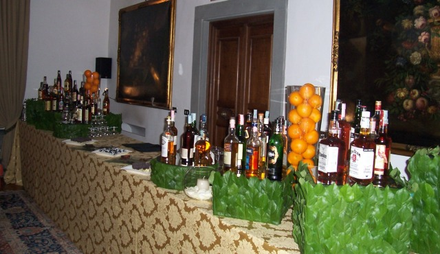

<div id="content">
    <div class="post" id="post-28">
        <h3 class="posttitle">Servizi</h3>
        <div class="entrytext">
            <p><strong><em>RumClub Italiano</em></strong>&nbsp;<strong>Per Tutti<br>
                </strong><a target="_blank" href="./" title="Iscrizione al Club">L’Iscrizione Gratuita Rapida</a> al <em>Club<br>
                </em>Prevede:<br> - Subito l’ e-mail di presentazione delle attività del Club<br> - Newsletter settimanale Rum Club Italiano<br> - Convenzioni e Sconti da parte di Tutti gli <em>Operatori RumClub</em> : come da <a target="_blank" href="./regolamento"
                    title="Regolamento">Regolamento</a> tutti gli Operatori si impegnano a praticare con tutti i soci del Club la convenzione che hanno dichiarato in fase di Iscrizione al Club e che è riportata sul loro profilo, nell’ <a href="./area-operatori-rumclub"
                    title="Area Operatori">Area Operatori</a>.<br> Come da Regolamento per ottenere tale convenzione i Soci del Club dovranno certamente dimostrare di essere tali, portando con sé una copia stampata della newsletter settimanale, non più vecchia
                di 3 mesi, da mostrare al referente dell’Operatore membro.</p>
            <p><em><strong>Circuito Operatori RumClub</strong></em><br>
                <a target="_blank" href="./form_operatori.html" title="Form Operatori">L’Iscrizione Gratuita Rapida </a>al <em>Circuito Operatori RumClub</em>:<br> Prevede, ugualmente a sopra:<br>                - Subito l’ e-mail di presentazione delle attività del Club<br> - Newsletter settimanale Rum Club Italiano<br> - La presenza nell’ <a target="_blank" href="./area-operatori-rumclub"
                    title="Area Operatori">Area Operatori</a>, con tutte le info e i contatti necessari e breve recensione dell’attività<br> - Convenzioni e Sconti da tutti gli operatori RumClub. : Come da <a target="_blank" href="./regolamento"
                    title="Regolamento">Regolamento</a> tutti gli Operatori si impegnano a praticare con tutti i soci del Club la convenzione che hanno dichiarato in fase di Iscrizione al Club e che è riportata sul loro profilo, nell’ Area Operatori.<br>                Inoltre:
                <br> A titolo promozionale, fra breve e fino a data 31/12/2007 saranno<br> altresì Gratuiti i servizi:<br> - <em>Viceverso</em>, con tutte le Selezioni Rum degli Operatori membri<br> - Promozione sul blog di eventi della vostra attività,
                ANCHE NON organizzati in collaborazione con RumClub (ovviamente riguardanti Rum)<br> Dal 01/01/2008 questi servizi potranno diventare a pagamento, ed insieme ad altre novità faranno parte dell’iscrizione al <em>Circuito Operatori RumClub</em>                a pagamento. Per incentivare le iscrizioni e per divulgare <em>ViceVerso</em> saranno fino al 2007 gratuiti: a tutti gli operatori arriverà una mail entro 30 gg dalla fine dell’anno con le nuove proposte di iscrizione, cui potranno aderire.
                In caso contrario rimarranno iscritti nel Circuito Operatori RumClub senza più i servizi e le novità citati sopra, ma solo con i Servizi gratuiti. La pubblicità di eventuali eventi NON in collaborazione con RumClub, “auto-organizzati”,
                potrà comunque essere richiesta e ottenuta a pagamento, volta per volta.</p>
            <p>——————————————<br> Proposte di degustazioni ed eventi con <strong>diverse Formule possibili:<br>
            </strong></p>
            <p><strong>- Degustazione al Tavolo</strong>:<br> Facilmente applicabile e “gettonata” da parte dei Marchi, che nell’arco di qualche minuto, al tavolo a fine cena, presentano/promuovono la gamma di Rum del Brand e offrono un assaggio. Per offrire
                qualcosa in più è indicatissimo prevedere di lasciare ai clienti assaggiatori un piccolo gadgets. Per portare via un pensiero e il nome del Brand stesso. L’orario è libero, i clienti rimangono al loro tavolo, e la degustazione si svolge
                al loro tavolo.</p>
            <p><strong>- Degustazione Classica</strong> :<br> La configurazione ideale: Gli invitati, prenotati, si trovano ad un’ora stabilita e si dispongono in modo da ascoltare il Relatore, che fa il medesimo percorso per tutti, “uno contro tutti”. Sono
                le più indicate per i Locali/Ristoranti/Winebar che vogliono trasmettere cultura e guadagnare in visibilità. Perfetta con una selezione indipendente o anche in collaborazione con un distributore, ma con marchi necessariamente diversi.
                Qui l’obiettivo è diffondere la cultura del Rum non di un marchio. Degustazioni didattiche, Tecniche di assaggio, Blind Test, Verticali di provenienza o di invecchiamento, con attenzione ad abbinamenti e quant’altro. Insomma l’approfondimento
                più sano e coinvolgente, protagonista è l’invitato, con tanto di supporti visivi e slide. E si beve con calma e… meglio!</p>
            <p><strong>- Rum Corner:</strong><br>                Soluzione versatile, adottata spesso dalle agenzie di eventi e comunicazione, a seguire di ricevimenti, cene aziendali, matrimoni, ma anche inaugurazioni di attività e feste Gli invitati si intrattengono al Corner e assaggiano i prodotti,
                si fanno consigliare su abbinamenti e si svagano tra curiosità e chiacchiere. Il Rum Corner è perfetto anche per stand Fiere e presentazioni di prodotto: è il sistema migliore per attirare, far assaggiare e incuriosire nel brevissimo tempo
                a disposizione. Nei Locali/Ristoranti/Winebar viene organizzato come evento secondario o per testare i gusti della clientela senza essere troppo invasivi, o per limitare i costi.</p>
            <p><strong>- Corso di degustazione</strong> <a href="./academia-de-ron/" title="Academia de Ron">“Academia de Ron”:<br>
                </a>nell’arco di 3 serate , a frequenza settimanale, gli invitati vengono immersi in un affascinante viaggio nella cultura del Rum, i diversi Stili, i Caraibi, la Storia, il Mercato di oggi, le approfondite tecniche di degustazione, l’analisi cromatica,
                olfattiva, gustativa, gli abbinamenti, tra leggi e leggende, verità e piraterie vecchie di secoli… Tutto accompagnato da una dozzina di ottimi Rum, Cioccolati di ogni tipo, caffè, fave di cacao, Sigari e diversi abbinamenti culinari. Al
                termine verrà rilasciato l’Attestato di Partecipazione : Mastro Ronero del Rum Club Italiano. Coloro che organizzano Academia de Ron con RumClub sono quasi sempre i Locali/Ristoranti/Winebar che vogliono soddisfare i loro clienti affezionati,
                ma anche Scuole di Formazione per Bartenders (cui si propone anche il <a target="_blank" href="./corso-base-di-degustazione-liquori-distillati/" title="Corso Degustazione Liquori &amp; Distillati">Corso L&amp;D</a>)
                e per Food &amp; Beverage Manager che cercano specializzazioni.<br> ——————————————
            </p>
            <p><strong>SERVIZI </strong>Per gli <strong>Appassionati</strong><br>
                <a target="_blank" href="./" title="Iscrizione al Club">L’Iscrizione Gratuita Rapida</a> al <em>Club<br>
                </em>Proposte intriganti per appassionati, a parte ovviamente la partecipazione alle degustazioni ..ovunque si svolgano..sono:<br> - <em>Degustazioni Private</em>, anche a domicilio.<br> Regalare ad un appassionato un’esperienza, una serata intrigante
                e originale, da non dimenticare, in linea con la neo-“moda” dell’Experience Gift.<br> Un esperto, competente e socievole verrà a casa vostra con tutto il necessario, e vi presenterà una degustazione di 3 o 4 eccezionali Rum, con golosi
                Cioccolati in abbinamento, e se richiesto pregiati Sigari.<br> La durata e il costo e il taglio da dare all’atmosfera sono in funzione delle vostre esigenze, di quanto volete spendere e in funzione dei Rum scelti. Anche l’atmosfera della
                serata sarà tutta per il festeggiato..<br> - Un’altra novità è una <em>Cena Caraibica </em>con Degustazione Rum: oltre a quanto detto sopra, si presenterà insieme a RumClub anche uno Chef caraibico che preparerà a casa vostra prelibate
                specialità in abbinamento. Dopo, o..durante, ci si dà al Rum. Per un gruppo di 8/10 persone questa soluzione è veramente carina e originale.<br> In entrambi i casi non specifichiamo oltre le possibili offerte per trasmettere la nostra<strong> apertura alle più varie esigenze, secondo&nbsp;</strong>cosa
                pensate di voler organizzare e dell’esperienza che avevate in mente. <a target="_blank" href="./contatti" title="Contatti">Senza problemi, Contattaci! </a></p>
            <p><strong>SERVIZI </strong>Per i <strong>Ristoranti/Locali/WineBar</strong><br>
                <a target="_blank" href="./form_operatori.html" title="Form Operatori">L’Iscrizione Gratuita Rapida </a>al <em>Circuito Operatori RumClub</em>:<br> Per una serata in collaborazione
                con RumClub, avrai SEMPRE : promozione della serata sul sito, linkato quindi ai numerosi portali tematici sulla cultura del bere bene<br> - newsletter ai membri , anche mirata alla promozione nella tua zona - materiale informativo e supporti
                visivi<br> La proposta di RumClub per una serata è un fisso per il pacchetto, che varia appunto in funzione della formula e del pacchetto nonché della qualità dei Rum in degustazione</p>
            <p><strong>!!!</strong> Per i locali in Milano Città la proposta invece si Sdoppia:<br> - se già si ha un buon numero di clienti appassionati che parteciperebbero, allora la proposta può rimanere su una cifra fissa per RumClub,<br> - se invece
                si è interessati ma non si è certi sul numero dei partecipanti, su Milano Città il pacchetto può comprendere anche…i clienti!
                <a href="./assets/images/winenight.jpg"
                    title="winenight.jpg"></a><br> Su Milano Città abbiamo
                infatti una grande Forza:<br> In collaborazione con <a target="_blank" href="http://www.winenight.it/" title="Winenight !">Winenight.it </a>, attraverso una collaudata mailing list, ci possiamo
                permettere di promuovere noi la serata. Quindi di non chiedere al locale un costo fisso per la serata, ma anzi una percentuale sugli ingressi: facendo in modo che il locale sia “solo” il padrone di casa, senza l’onere della promozione
                e senza il rischio sulla riuscita.</p>
            <p><a target="_blank" href="./contatti" title="Contatti">Chiedi un preventivo personalizzato per una serata nel tuo locale</a><br> Inoltre si potranno richiedere, a pagamento, altri
                Servizi:<br> - come già detto, promozione di un evento organizzato non in collaborazione con RumClub, riguardante ovviamente il Rum ( in Promozione gratis fino 31/12/2007)<br> - Banner pubblicitario del vostro ristorante/locale<br> - supporto
                per la compilazione della Lista dei Rum, con le note di degustazione<br> - corso di formazione per il personale su come vendere e promuovere Rum<br> - “Pre-Iscrizione” al futuro Forum e al futuro commercio on-line<br> - altre vs richieste</p>
            <p><strong>SERVIZI</strong> Per le <strong>Agenzie di Organizzazione Eventi</strong><br>
                <a target="_blank" href="./form_operatori.html" title="Form Operatori">L’Iscrizione Gratuita Rapida </a>al <em>Circuito Operatori RumClub</em>:<br> L’ inclusione nell’ Area
                Operatori dà ulteriore Visibilità alla vostra attività.<br> Da parte proprio di chi ha necessità di organizzare eventi e manifestazioni di questo tipo, siano questi Soci interessati o altri Operatori del Circuito.</p>
            <p>RumClub offre, per gli Eventi, dalla sola presenza di un esperto, al Pacchetto completo:<br> - consulenza iniziale via mail su cosa proporre al vs cliente<br> - preventivo dettagliato senza impegno.<br> - sopralluogo nella location dell’evento<br>                - fornitura di materiali, servizio, allestimenti, supporti visivi se necessari, per ogni tipo di soluzione<br> - fornitura di tutti i prodotti<br> - presenza in loco anche di più addetti competenti, tutti bilingue<br> - organizzazione
                dell’eventuale attività di contorno<br> - inclusione nel porfolio eventi RumClub ( eccetto vs richiesta di privacy contraria)</p>
            <p><strong>SERVIZI </strong>Per le <strong>Agenzie di Comunicazione e Mktg nel Beverage</strong><br>
                <a target="_blank" href="./form_operatori.html" title="Form Operatori">L’Iscrizione Gratuita Rapida</a> al <em>Circuito Operatori RumClub</em>:<br> L’ inclusione nell’ Area
                Operatori dà ulteriore Visibilità alla vostra attività nel Circuito Operatori.</p>
            <p>Il vostro cliente ( il Brand di Rum o chi per esso), all’interno del progetto generale di marketing mix chiede una Promozione sul campo (road show, in-store promotion..) e affidarsi per questo a RumClub significa collaborare con il migliore
                interlocutore col consumatore in quanto a Rum, dando al cliente un servizio e un riscontro eccellenti, senza l’onere di doversi costruire un know-how specifico.</p>
            <p>- Consulenza iniziale via mail sul consumatore target e sulla strategia promozionale ottimale per quel specifico Brand<br> - Competenza su dinamiche dei servizi promozionali: road-show,in-store promotion,degustazioni,eventi. In funzione della
                strategia promozionale definita<br> - Competenza merceologica specifica eccellente<br> - presenza in loco anche di più addetti competenti<br> - Puntigliosità su affidamento mezzi, strutture, gadgets<br> - Puntigliosità su controllo costi,
                ricevute e contabilità<br> - Puntigliosità su report dettagliato sulle tappe/date<br> - Inclusione nel porfolio delle collaborazioni RumClub ( eccetto vs richiesta di privacy contraria)</p>
            <p><strong>SERVIZI</strong> Per i <strong>Brands</strong>:<br>
                <a target="_blank" href="./form_operatori.html" title="Form Operatori">L’Iscrizione Gratuita Rapid</a>a al <em>Circuito Operatori RumClub:<br>
                    </em>La presenza del vostra azienda e dei suoi Brands su RumClub Italiano garantisce la Visibilità del marchio su quello che è l’unico portale di riferimento sul Rum.<br> - Banner pubblicitari del Brand - Consulenza per organizzazione vostre iniziative
                promozionali e di mktg - Consulenza su : consumatori, mercato tua della zona, fornitori della tua zona<br> Brand Ambassador, per il quale si garantisce:<br> - Competenza su servizi/tour promozionali/in-store promotion/degustazioni/eventi/<br>                - Competenza merceologica<br> - Conoscenza approfondita sui consumatori tipo per il determinato Brand, su cosa li interessa, su come parlare loro del Brand e della tipologia che rappresenta, sulle loro leve motivazionali di consumo<br>                - Conoscenza approfondita sui ristoranti/locali tipo per il determinato Brand, e contatti con loro attraverso il Circuito RumClub<br> - Propensione a stabilire un contatto tra il ristorante/locale e il referente di zona del Brand</p>
            <p><strong>SERVIZI</strong> Per <strong>Distributori/Commercianti Spirits</strong><br>
                <a target="_blank" href="./form_operatori.html" title="Form Operatori">L’Iscrizione Gratuita Rapida </a>al <em>Circuito Operatori RumClub</em>:<br> La presenza del vostra
                attività azienda e dei suoi prodotti su RumClub Italiano garantisce la visibilità dell’attività stessa. I Locali/Ristoranti/Winebar membri e non solo membri potranno accedere ai vostri contatti. Molto importante per la vostra categoria
                l’ Area Viceverso: anche se non fate somministrazione l’elencazione dei vostri Rum è di grande importanza.<br> - Organizzazione degustazioni presso vostro punto vendita O presso vostri clienti<br> - Consulenza per organizzazione vostre
                iniziative promozionali e di mktg,<br> - Consulenza su consumatori, mercato tua della zona, fornitori della tua zona</p>
            <p><strong>Per Tutti </strong>forniamo, previa richiesta mail, materiale informativo di ogni tipo :<br> - specifiche di centinaia di prodotti (tasting notes, notizie sulle aziende, ricerche di mercato..)<br> - informazioni sul mercato italiano
                (i prezzi e i punti vendita migliori della tua zona)<br> - informazioni collaterali, turistiche ( consigli e info su viaggi ai caraibi), le cioccolaterie , i cigar club<br> - spassionati consigli…</p>
            <p><em>Se avete qualche altra idea interessante, particolare e che leggendo è saltata in mente..<br>
                    ..per qualsiasi, e dico qualsiasi informazione</em></p>
            <p>Contatta RumClub,<strong>daniele@rumclub.org</strong></p>
        </div>
    </div>
</div>